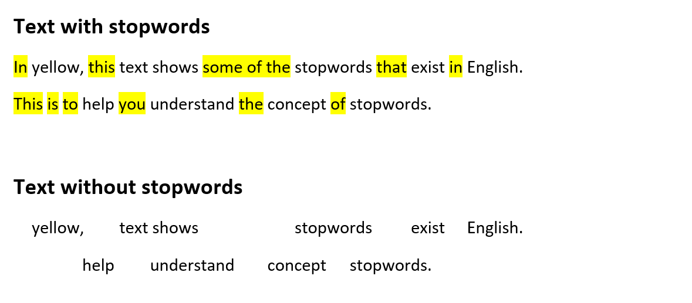
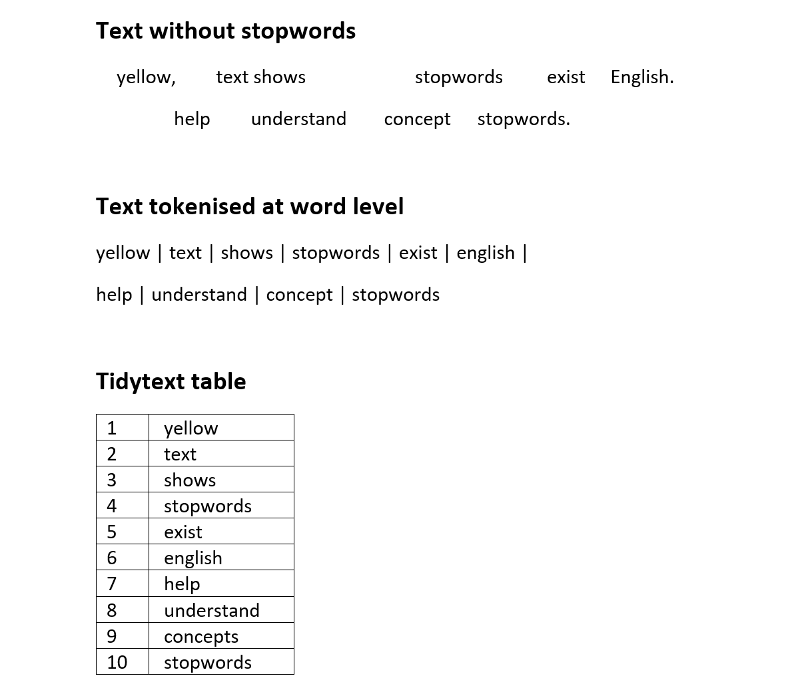
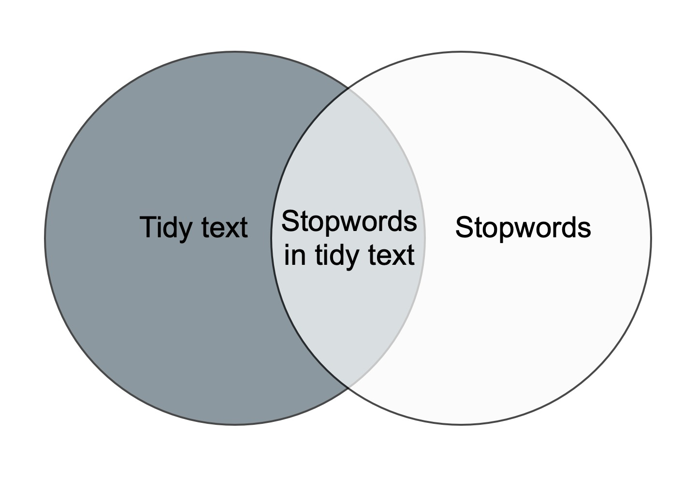
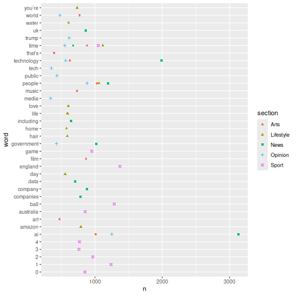
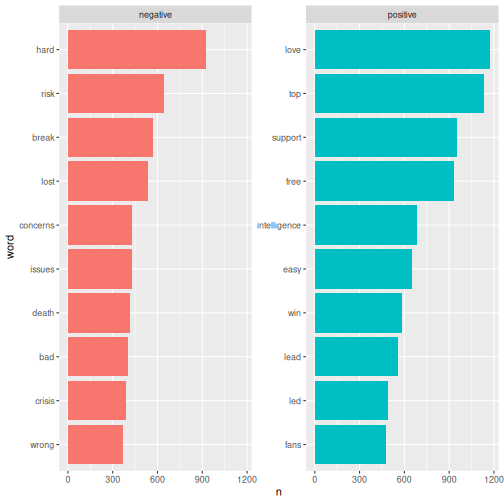

All in One View
Content from Introduction
Last updated on 2026-06-29 | Edit this page
Overview
Questions
- What is text mining?
- What are stopwords?
- What is tokenisation?
- What is tidytext?
Objectives
- Explain what text mining is
- Explain what stopwords are
- Explain what tokenisation is
- Explain what tidytext is
What is text mining?
Text mining is the process of extracting meaningful information and knowledge from text. Text mining tools and methods allow the user to analyse large bodies of texts and to visualise the results.
By applying text mining principles to to a body of text, you can gain insights that would otherwise be impossible to detect with the naked eye.
Before carrying out your analysis, the text must be transformed so that it can be read by a machine.
Stopwords
Text often contains words that hold no particular meaning. These are called stopwords and can be found throughout the text. Since stopwords rarely contribute to the understanding of the text, it is a good idea to remove them before analysing the text.
Example of removing stopwords

Tidytext and tokenisation
In the following we will be making the text machine-readable by means of the tidy text principles.
Tidy text
The tidy text princples were developed by Silge and Robinson and apply the principles from the tidy data on text.
The tidy data framework principles are:
- Each variable forms a column.
- Each observation forms a row.
- Each type of observational unit forms a table.
Applying these principles to text data leads to a format that is easily manipulated, visualised and analysed using standard data science tools.
Tidy text represents the text by breaking it down into smaller parts such as sentences, words or letters. This process is called tokenisation.
Tokenisation is language independent, as long as the language uses space between each word.
Here is an example of tokenisation at word-level.
Example of tokenization

- Know what text mining is
- Know what stopwords are
- Knowledge of the data we are working with
- Know what tidy text means
Content from Loading data
Last updated on 2026-06-29 | Edit this page
Overview
Questions
- Which packages are needed?
- How is the dataset loaded?
- How is a dataset inspected?
Objectives
- Knowledge of the relevant packages
- Ability to to load the dataset
- Ability to inspect the dataset
Getting started
When performing text analysis in R, the built-in functions in R are
not sufficient. It is therefore necessary to install some additional
packages. In this course we will be using the packages
tidyverse and tidytext.
R
install.packages("tidyverse")
install.packages("tidytext")
install.packages("tm")
library(tidyverse)
library(tidytext)
library(tm)
Getting data
Begin by downloading the dataset called articles.csv.
Place the downloaded file in the data/ folder. You can do this directly
from R by copying and pasting this into your console. (The console is
the panel under your script).
R
download.file("https://raw.githubusercontent.com/KUBDatalab/R-textmining_new/main/episodes/data/guardianArticles.csv", "data/guardianArticles.csv", mode = "wb")
After downloading the data you need to load the data into R’s memory
using the function read_csv().
R
articles <- read_csv("data/guardianArticles.csv", na = c("NA", "NULL", ""))
Taking a first look at the dataset
R
articles
OUTPUT
# A tibble: 1,898 × 7
id date text section region author wordcount
<dbl> <chr> <chr> <chr> <chr> <chr> <dbl>
1 1 2026-05 Britain’s biometrics watchdogs… News UK Jessi… 1328
2 2 2026-02 Iran’s architecture of interne… News UK Aisha… 657
3 3 2026-01 TikTok will begin to roll out … News UK Mark … 623
4 4 2026-05 The parent company of Donald T… News US Edwar… 348
5 5 2026-05 It is a familiar story. Extrav… Opinion UK Edito… 585
6 6 2026-04 Sonia Bompastor, the Chelsea h… Sport UK Tom G… 468
7 7 2026-03 Transcription ends with an epi… Arts UK Sukhd… 917
8 8 2026-04 When Greg Swann was appointed … Sport AUS Jonat… 794
9 9 2026-02 Immigration and Customs Enforc… News US Harry… 915
10 10 2026-01 Gathering Summer after summer,… News UK Rebec… 4213
# ℹ 1,888 more rowsData description
The dataset contains newspaper articles from the Guardian newspaper. The harvested articles were published between June 2025 and May 2026 and contain the word “technology”.
The original dataset contained lots of variables considered irrelevant within the parameters of this course. The following variables were kept:
- id - unique number identifying each article
- date - month and publication year
- text - full text from the article
- section - Guardian news section
- region - production region
- author - name(s) of journalist(s)
- wordcount - number of words
Taking a quick look at the data
The tidyverse-package has some functions that allow you
to inspect the dataset. Below, you can see some of these functions and
what they do.
R
head(articles)
OUTPUT
# A tibble: 6 × 7
id date text section region author wordcount
<dbl> <chr> <chr> <chr> <chr> <chr> <dbl>
1 1 2026-05 Britain’s biometrics watchdogs … News UK Jessi… 1328
2 2 2026-02 Iran’s architecture of internet… News UK Aisha… 657
3 3 2026-01 TikTok will begin to roll out n… News UK Mark … 623
4 4 2026-05 The parent company of Donald Tr… News US Edwar… 348
5 5 2026-05 It is a familiar story. Extrava… Opinion UK Edito… 585
6 6 2026-04 Sonia Bompastor, the Chelsea he… Sport UK Tom G… 468R
tail(articles)
OUTPUT
# A tibble: 6 × 7
id date text section region author wordcount
<dbl> <chr> <chr> <chr> <chr> <chr> <dbl>
1 4970 2025-07 "[Where’s the game at?] Definit… Sport UK James… 8817
2 4975 2025-06 "Tim Henman, who was disqualifi… Sport UK Katy … 7537
3 4981 2025-06 "Ali Martin’s report will be wi… Sport UK Rob S… 8874
4 4994 2025-06 "An epic tie-break to end an ep… Sport UK John … 9208
5 5003 2025-11 "Don’t you just love Christmas … Lifest… UK Hanna… 13325
6 5018 2025-07 "Here’s Ewan Murray’s report an… Sport UK David… 14350R
glimpse(articles)
OUTPUT
Rows: 1,898
Columns: 7
$ id <dbl> 1, 2, 3, 4, 5, 6, 7, 8, 9, 10, 11, 12, 13, 14, 15, 16, 17, 1…
$ date <chr> "2026-05", "2026-02", "2026-01", "2026-05", "2026-05", "2026…
$ text <chr> "Britain’s biometrics watchdogs have warned that national ov…
$ section <chr> "News", "News", "News", "News", "Opinion", "Sport", "Arts", …
$ region <chr> "UK", "UK", "UK", "US", "UK", "UK", "UK", "AUS", "US", "UK",…
$ author <chr> "Jessica Murray and Robert Booth", "Aisha Down", "Mark Swene…
$ wordcount <dbl> 1328, 657, 623, 348, 585, 468, 917, 794, 915, 4213, 1304, 66…R
names(articles)
OUTPUT
[1] "id" "date" "text" "section" "region" "author"
[7] "wordcount"R
dim(articles)
OUTPUT
[1] 1898 7- Packages must be installed and loaded
- The dataset needs to be loaded
- The dataset can be inspected by means of different functions
Content from Tokenisation and stopwords
Last updated on 2026-06-29 | Edit this page
Overview
Questions
- How is text prepared for analysis?
Objectives
- Ability to tokenise a text
- Ability to remove stopwords from text
Tokenisation
Since we are working with text mining, we focus on the
text coloumn. We do this because the coloumn contains the
text from the articles in question.
To tokenise a column, we use the functions
unnest_tokens() from the tidytext-package. The
function gets two arguments. The first one is word. This
defines that the text should be split up by words. The second argument,
text, defines the column that we want to tokenise.
R
articles_tidy <- articles |>
unnest_tokens(word, text)
articles_tidy
OUTPUT
# A tibble: 2,405,300 × 7
id date section region author wordcount word
<dbl> <chr> <chr> <chr> <chr> <dbl> <chr>
1 1 2026-05 News UK Jessica Murray and Robert Booth 1328 brita…
2 1 2026-05 News UK Jessica Murray and Robert Booth 1328 biome…
3 1 2026-05 News UK Jessica Murray and Robert Booth 1328 watch…
4 1 2026-05 News UK Jessica Murray and Robert Booth 1328 have
5 1 2026-05 News UK Jessica Murray and Robert Booth 1328 warned
6 1 2026-05 News UK Jessica Murray and Robert Booth 1328 that
7 1 2026-05 News UK Jessica Murray and Robert Booth 1328 natio…
8 1 2026-05 News UK Jessica Murray and Robert Booth 1328 overs…
9 1 2026-05 News UK Jessica Murray and Robert Booth 1328 of
10 1 2026-05 News UK Jessica Murray and Robert Booth 1328 ai
# ℹ 2,405,290 more rowsTokenisation
The result of the tokenisation is 2,405,300 rows. The reason is that
the text-column has been replaced by a new column named
word. This column contains all words found in all of the
articles. The information from the remaining columns are kept. This
makes is possible to determine which article each word belongs to.
Note that we can only see part of the word column’s content.
Stopwords
The next step is to remove stopwords. We have chosen to use the
stopword list from the package tidytext. The list contains
1,149 words that are considered stopwords. Other lists are available,
and they differ in terms of how many words they contain.
R
data(stop_words)
stop_words
OUTPUT
# A tibble: 1,149 × 2
word lexicon
<chr> <chr>
1 a SMART
2 a's SMART
3 able SMART
4 about SMART
5 above SMART
6 according SMART
7 accordingly SMART
8 across SMART
9 actually SMART
10 after SMART
# ℹ 1,139 more rowsAdding and removing stopwords
You may find yourself in need of either adding or removing words from the stopwords list.
Here is how you add and remove stopwords to a predefined list.
First, create a tibble with the word you wish to add to the stopwords list
R
new_stop_words <- tibble(
word = c("cat", "dog"),
lexicon = "my_stopwords"
)
Then make a new stopwords tibble based on the original one, but with the new words added.
R
updated_stop_words <- stop_words |>
bind_rows(new_stop_words)
Run the following code to see that the added lexicon
my_stopwords contains two words.
R
updated_stop_words |>
count(lexicon)
OUTPUT
# A tibble: 4 × 2
lexicon n
<chr> <int>
1 SMART 571
2 my_stopwords 2
3 onix 404
4 snowball 174First, create a vector with the word(s) you wish to remove from the stopwords list.
R
words_to_remove <- c("cat", "dog")
Then remove the rows containing the unwanted words.
R
updated_stop_words <- stop_words |>
filter(!word %in% words_to_remove)
Run the following code to see that the added lexicon
my_stopwords nolonger exists.
R
updated_stop_words |>
count(lexicon)
OUTPUT
# A tibble: 3 × 2
lexicon n
<chr> <int>
1 SMART 571
2 onix 404
3 snowball 174In order to remove stopwords from articles_tidy, we have
to use the anti_join-function.
R
articles_anti_join <- articles_tidy |>
anti_join(stop_words, by = "word")
articles_anti_join
OUTPUT
# A tibble: 1,118,028 × 7
id date section region author wordcount word
<dbl> <chr> <chr> <chr> <chr> <dbl> <chr>
1 1 2026-05 News UK Jessica Murray and Robert Booth 1328 brita…
2 1 2026-05 News UK Jessica Murray and Robert Booth 1328 biome…
3 1 2026-05 News UK Jessica Murray and Robert Booth 1328 watch…
4 1 2026-05 News UK Jessica Murray and Robert Booth 1328 warned
5 1 2026-05 News UK Jessica Murray and Robert Booth 1328 natio…
6 1 2026-05 News UK Jessica Murray and Robert Booth 1328 overs…
7 1 2026-05 News UK Jessica Murray and Robert Booth 1328 ai
8 1 2026-05 News UK Jessica Murray and Robert Booth 1328 power…
9 1 2026-05 News UK Jessica Murray and Robert Booth 1328 scann…
10 1 2026-05 News UK Jessica Murray and Robert Booth 1328 catch
# ℹ 1,118,018 more rowsThe anti_join-function removes the stopwords from the
orginal dataset. This is illustrated in the figure below. The only part
left after anti-joining is the dark grey area to the left.
These words are saved as the object
articles_anti_join.

- Know how to prepare text for analysis
Content from Word frequency analysis
Last updated on 2026-06-29 | Edit this page
Overview
Questions
- How is a frequency analysis conducted?
Objectives
- Learn how to find frequent words
- Learn how to analyse and visualise it
Frequency analysis
A word frequency is a relatively simple analysis. It measures how often words occur in a text.
R
articles_anti_join |>
count(word, sort = TRUE)
OUTPUT
# A tibble: 68,899 × 2
word n
<chr> <int>
1 it’s 6584
2 ai 5778
3 people 4422
4 time 4277
5 technology 3946
6 world 2758
7 don’t 2131
8 day 1803
9 life 1694
10 uk 1690
# ℹ 68,889 more rowsThe previous code chunk resulted in a list containing the most frequent words. The words are from articles about both presidents, and they are sorted based on frequency with the highest number on top.
A closer look at the list may reveal that some words are irrelevant. Given that the articles in the dataset are about the two presidents’ respective inaugurations, we consider the words below irrelevant for our analysis. Therefore, we make a new dataset without these words.
R
articles_filtered <- articles_anti_join |>
filter(!word %in% c("it’s", "don’t"))
articles_filtered |>
count(word, sort = TRUE)
OUTPUT
# A tibble: 68,897 × 2
word n
<chr> <int>
1 ai 5778
2 people 4422
3 time 4277
4 technology 3946
5 world 2758
6 day 1803
7 life 1694
8 uk 1690
9 that’s 1667
10 government 1644
# ℹ 68,887 more rowsThe words deemed irrelevant are no longer on the list above.
Instead of a general list it may be more interesting to focus on the most frequent words belonging to articles about the two presidents respectively.
R
articles_filtered |>
count(section, word, sort = TRUE)
OUTPUT
# A tibble: 138,065 × 3
section word n
<chr> <chr> <int>
1 News ai 3131
2 News technology 1993
3 Sport england 1371
4 Sport ball 1287
5 Opinion ai 1250
6 Sport 1 1239
7 News people 1196
8 Lifestyle time 1117
9 Lifestyle people 1062
10 Sport time 1050
# ℹ 138,055 more rowsKeeping an overview of the words associated with each section can be a bit tricky. For instance, the word “people” is associated with both presidents. This is easy to see, as the two words are right next to each other. The two occurrences of the word America, however, are further apart, although this word is also associated with both presidents. A visualisation may solve this problem.
R
articles_filtered |>
count(section, word, sort = TRUE) |>
group_by(section) |>
slice(1:10) |>
ggplot(mapping = aes(x = n, y = word, colour = section, shape = section)) +
geom_point()

The plot above shows the top-ten words associated with Obama and Trump respectively. If a word features on both presidents’ top-ten list, it only occurs once in the plot. This is why the plot doesn’t contain 20 words in total.Another interesting aspect to look at would be the most frequent words used in relation to each president. In this analysis the president is the guiding principle.
R
articles_filtered |>
count(president, word, sort = TRUE) |>
pivot_wider(
names_from = president,
values_from = n
)
ERROR
Error in `count()`:
! Must group by variables found in `.data`.
✖ Column `president` is not found.R
articles_filtered |>
group_by(president) |>
count(word, sort = TRUE) |>
top_n(10) |>
ungroup() |>
mutate(word = reorder_within(word, n, president)) |>
ggplot(aes(n, word, fill = president)) +
geom_col() +
facet_wrap(~president, scales = "free") +
scale_y_reordered() +
labs(x = "word occurrences")
ERROR
Error in `group_by()`:
! Must group by variables found in `.data`.
✖ Column `president` is not found.The analyses just made can easily be adjusted. For instance, if we
want look at the words by pillar_name instead of by
president, we simply replace president with
pillar_name in the code.
R
articles_filtered |>
count(pillar_name, word, sort = TRUE) |>
group_by(pillar_name) |>
slice(1:10) |>
ggplot(mapping = aes(x = n, y = word, colour = pillar_name, shape = pillar_name)) +
geom_point()
ERROR
Error in `count()`:
! Must group by variables found in `.data`.
✖ Column `pillar_name` is not found.- Making a frequency analysis
- Visualising the results
Content from Sentiment analysis
Last updated on 2026-06-29 | Edit this page
Overview
Questions
- What is a sentiment?
- How is sentiment analysis conducted?
Objectives
- Learn about different lexicons
- Learn how to add sentiment to words using lexicons
- Analyse and visualise the sentiments in a text
Sentiment analysis
Sentiment refers to the emotion or tone in a text. It is typically categorised as positive, negative or neutral. Sentiment is often used to analyse opinions, attitudes or emotions in written content. In this case the written content is newspaper articles.
Sentiment analysis is a method used to identify and classify emotions in textual data. This is often done using word list (lexicons). The goal is to determine whether a given text has a positive, negative or neutral tone.
In order to do a sentiment analysis on our data we From the previous section we have a dataset containing a list of words in the text without stopwords. To do a sentiment analysis we can use a so-called lexicon and assign a sentiment to each word. In order to do this we need an list of words and their sentiment. A simple form would be wether they are positive or negative.
There are multiple sentiment lexicons. For a start we will be using
the bing lexicon. This lexicon categorizes words as either
positive or negative.
R
get_sentiments("bing")
OUTPUT
# A tibble: 6,786 × 2
word sentiment
<chr> <chr>
1 2-faces negative
2 abnormal negative
3 abolish negative
4 abominable negative
5 abominably negative
6 abominate negative
7 abomination negative
8 abort negative
9 aborted negative
10 aborts negative
# ℹ 6,776 more rowsIn order to use the bing-lexicon, we have to save
it.
R
bing <- get_sentiments("bing")
We now need to combine the sentiment to the words from our articles. We do this by performing an inner_join.
R
articles_bing <- articles_filtered |>
inner_join(bing)
OUTPUT
Joining with `by = join_by(word)`R
articles_bing
OUTPUT
# A tibble: 123,667 × 8
id date section region author wordcount word sentiment
<dbl> <chr> <chr> <chr> <chr> <dbl> <chr> <chr>
1 1 2026-05 News UK Jessica Murray and Ro… 1328 warn… negative
2 1 2026-05 News UK Jessica Murray and Ro… 1328 over… negative
3 1 2026-05 News UK Jessica Murray and Ro… 1328 lagg… negative
4 1 2026-05 News UK Jessica Murray and Ro… 1328 rapid positive
5 1 2026-05 News UK Jessica Murray and Ro… 1328 slow negative
6 1 2026-05 News UK Jessica Murray and Ro… 1328 warn… negative
7 1 2026-05 News UK Jessica Murray and Ro… 1328 effe… positive
8 1 2026-05 News UK Jessica Murray and Ro… 1328 misu… negative
9 1 2026-05 News UK Jessica Murray and Ro… 1328 over… negative
10 1 2026-05 News UK Jessica Murray and Ro… 1328 brea… positive
# ℹ 123,657 more rowsIn R, inner_join() is commonly used to combine datasets
based on a shared column. In this case it is the word
column. inner_join() matches words from a text dataset, in
this case articles_filtered with words in the Bing
sentiment lexicon to determine whether they are positive or
negative.
When we have the combined dataset we can begin making a sentiment analysis. A start could be to count the number of positive and negative words used in articles, per president.
R
articles_bing |>
group_by(president) |>
summarise(positive = sum(sentiment == "positive"),
negative = sum(sentiment == "negative"),
difference = positive - negative)
ERROR
Error in `group_by()`:
! Must group by variables found in `.data`.
✖ Column `president` is not found.This shows that more positive than negative words are associated with both presidents. It also shows that Trump is the president with the highest number of associated negative words.
Another interesting thing to look at would the 10 most positive and negative words used in the articles.
R
articles_bing |>
count(word, sentiment, sort = TRUE) |>
ungroup() |>
group_by(sentiment) |>
slice_max(n, n = 10) |>
ungroup() |>
mutate(word = reorder(word, n)) |>
ggplot(mapping = aes(n, word, fill = sentiment)) +
geom_col(show.legend = FALSE) +
facet_wrap(~sentiment, scales = "free_y")

Here we can see the positive and negative words used in the articles.With ´bing´ we only look at the sentiment in a binary fashion - a word is either positive or negative. If we try to do a similar analysis with AFINN, it looks different.
R
install.packages("textdata")
library(textdata)
R
library(textdata)
R
afinn <- get_sentiments("afinn")
R
articles_afinn <- articles_filtered |>
inner_join(afinn)
OUTPUT
Joining with `by = join_by(word)`R
articles_afinn |>
group_by(president) |>
summarise(sentiment = sum(value))
ERROR
Error in `group_by()`:
! Must group by variables found in `.data`.
✖ Column `president` is not found.R
articles_afinn |>
group_by(president, value) |>
summarise(sentiment = sum(value)) |>
ungroup() |>
ggplot(mapping = aes(x = value, y = sentiment, fill = president)) +
geom_col(position = "dodge")
ERROR
Error in `group_by()`:
! Must group by variables found in `.data`.
✖ Column `president` is not found.R
articles_afinn |>
count(president, word, value, sort = TRUE) |>
ungroup() |>
group_by(president, value) |>
slice_max(n, n = 3) |>
ungroup() |>
mutate(word = reorder(word, n)) |>
ggplot(mapping = aes(n, word, fill = president)) +
geom_col(show.legend = FALSE) +
facet_wrap(~value, scales = "free_y") +
labs(x = "Contribution to sentiment",
y = NULL)
ERROR
Error in `count()`:
! Must group by variables found in `.data`.
✖ Column `president` is not found.- Sentiments is the emotion or tone in a text
- There are different lexicons
- It is possible to add sentiments to words
- It is possible to visualise the sentiments
Content from Whats next?
Last updated on 2026-06-29 | Edit this page
Overview
Questions
- What is the next step?
Objectives
- Explain how to use markdown with the new lesson template
- Demonstrate how to include pieces of code, figures, and nested challenge blocks
For general techniques and approaches to working with text in a tidy manner, we recommend the Text Mining with R book by Julia Silge and David Robinson.
Julia Silge have her own youtube channel where she, among other things, do text analysis. You will learn a lot by listening to her thoughts while she code.
Text can be found everywhere. Rather than scraping text yourself, you can find R-packages containing text.
janeaustenr contains the text of Jane Austens novels.
Get it by running install.packages("janeaustenr")
The sherlock package contains the complete Sherlock
Holmes collection by Arthur Conan Doyle. It must be installed from
github, running
devtools::install_github("EmilHvitfeldt/sherlock").
- Use
.mdfiles for episodes when you want static content - Use
.Rmdfiles for episodes when you need to generate output - Run
sandpaper::check_lesson()to identify any issues with your lesson - Run
sandpaper::build_lesson()to preview your lesson locally